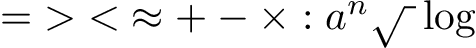
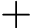

To constant quantities a, b, c, d… correspond in transcendent algebra definite concepts represented by figures, for example:
(145) (146)Variable quantities x, y, z, t… represent themselves with symbols:
(148) (149)Beyond figures and symbols, also used are numbers 1, 2, 3, 4… and letters a, b, c, d…, x, y, z, t…
(151)Figures, symbols, numbers and letters join themselves using mathematical characters:
(153)
(154)Concepts that are not able to be expressed immediately [through basic combinations of glyphs] represent themselves by means of mathematical operations.
(156)In calculation of concepts the value of all the laws of common algebra is conserved.
(158)The results of calculations are found intuitively by way of method of interpretation, used in philosophy.
(160)
plus, and, with, present (163)horse and cow